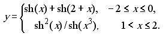
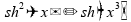
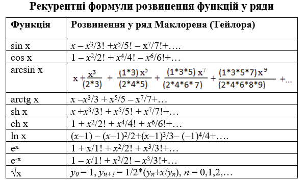
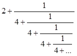
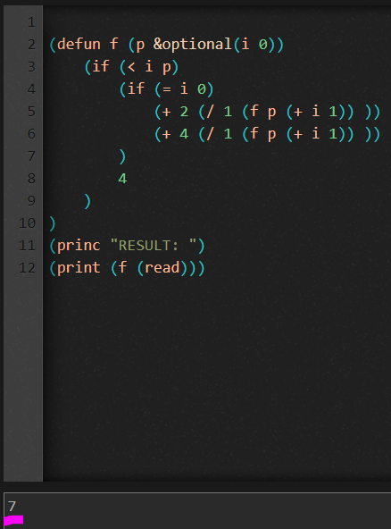
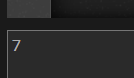
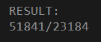
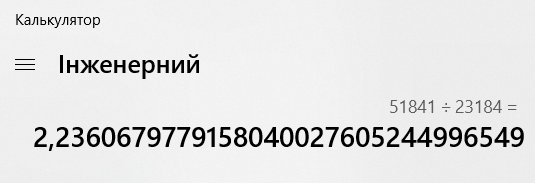
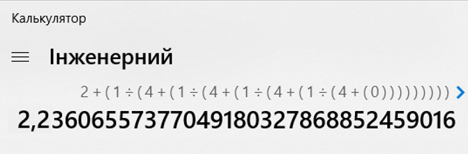

Мета
Опанувати теоретичні основи застосування рекурентних співвідношень для обчислення тригонометричних, експоненціальних, степеневих функцій та розробити програми функціональними мовам програмування для обчислення їх значень
Завдання 1
Завдання 2.1 Обчислити значення функції у, розвинувши функцію sh(x) у ряд Тейлора. Аргумент х змінюється від -3 до 3 з кроком 0.5. Визначити похибку. 
Хід роботи
Для вирішення завдання було розроблено алгоритм мовою lisp, та скомпільовано за допомогою онлайн компілятора rextester.com
SH, тобто гіперболічний сінус позначається в мові lisp як SINH
Тому, sh(x) + sh(2+x) => (+ (sinh x) (sinh (+ x 2)))
Та  => (/ (* (sinh x) (sinh x)) (sinh (*(* x x)x)))

Завдання 2
Завдання 2.2 Обчислити нескінчений ланцюговий дріб, задавши значення точності при виклику функції

Хід роботи
Ланцюго́вий дріб (або неперервний дріб) — це математичний вираз виду
де a0 є ціле число, а всі інші an є натуральними числами. Узагальненими ланцюговими дробами називають вирази виду:
Будь-яке дійсне число може бути представлене ланцюговим дробом. Число представляється скінченним ланцюговим дробом тоді й лише тоді , коли воно раціональне.
Для вирішення завдання було розроблено алгоритм мовою lisp, та скомпільовано за допомогою онлайн компілятора rextester.com
Код програми

За значення точності було введено число 7.

Результати

Для перевірки результату були проведені певні розрахунки на калькуляторі :


Висновки:
Отже, в результаті виконання лабораторної роботи було опановано теоретичні основи застосування рекурентних співвідношень для обчислення тригонометричних, експоненціальних, степеневих функцій та розроблено програми функціональними мовам програмування для обчислення їх значень